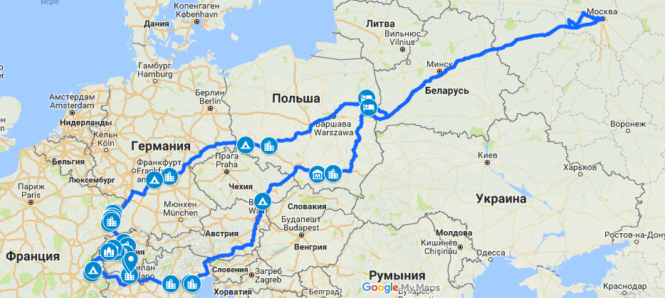
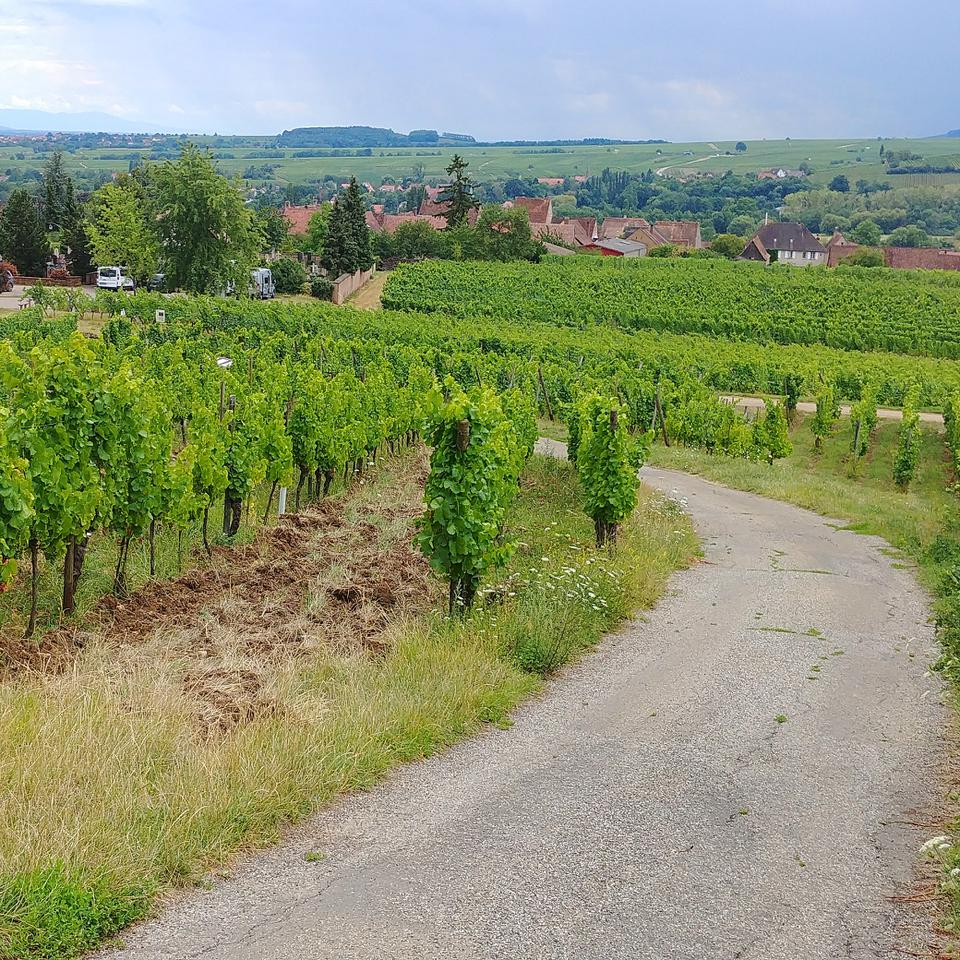
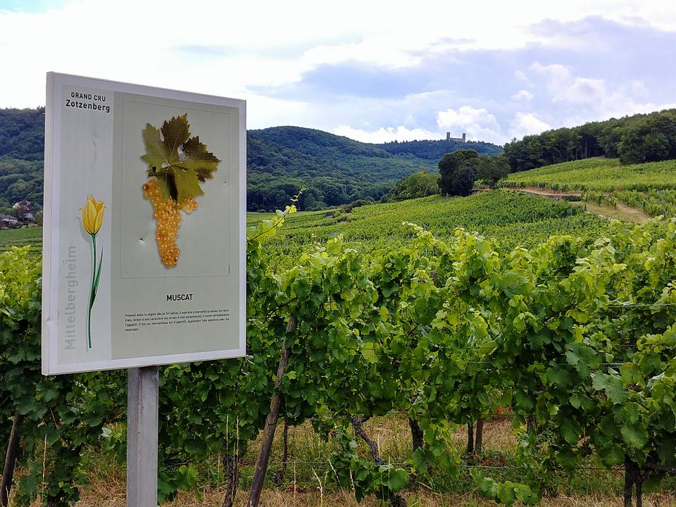
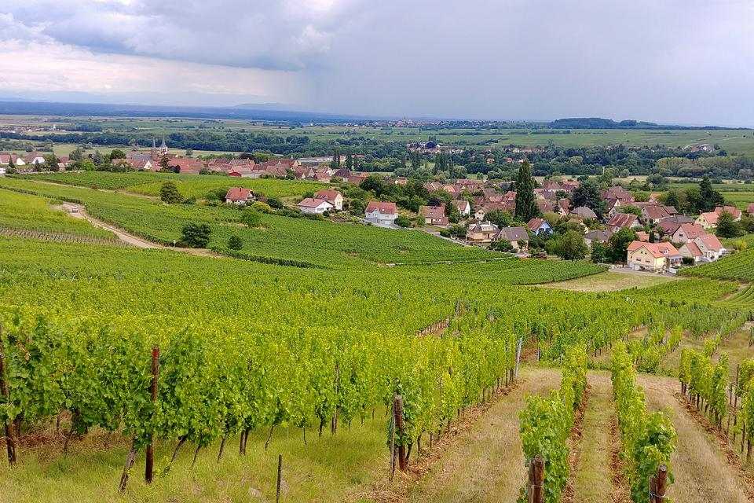
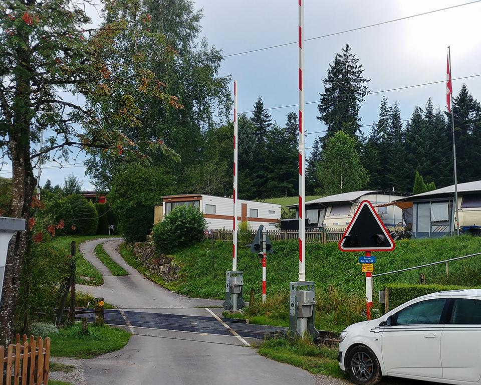

Франция, Швейцария, Италия (22 июля - 6 августа 2017 г.)
Попытался написать несколько слов и картинок по случаю летней покатушки 2017 года.

Осторожно, трафик (~ 70Мб).
Карта
15 дней, 7000 км.
Подготовка
Холодный июнь 2017 года не оставил особенного выбора в направлении для летнего путешествия: тепло, но не жарко и море. Примерный регион был определён за пару месяцев до поездки, были закуплены новые путеводители и Надя приступила поиску интересного. Было выбрано несколько основных регионов: Эльзас во Франции, Швейцария, Север Италии и Венеция. К сожалению, к моменту поездки у нас истекали чешские визы, по которым мы ездили последние два года и пришлось получать новые. За визами отправились к итальянцам, которые дали лишь на год. Из нового снаряжения был лишь новый надувной матрас Naturehike, который отлично себя показал в первую неделю поездки, а потом в нём лопнула одна из перемычек. Перед поездкой Кольт прошёл плановое ТО, были заменены тормозные колодки. Как и в прошлом году, из салона было извлечено 2/3 заднего дивана и скромный городской хэчбек приобрёл дополнительный грузовой объём, который был занят кемпинговым столом, коробками с барахлом, пустыми коробками под колониальные товары и большой палаткой.

Несмотря на то, что наследник наш уверенно освоил велосипед, ему был взят беговел в качестве средства передвижения, на котором проще преодолевать городские брусчатки и природные ландшафты. К огромному сожалению, старый-добрый TomTom не удалось запустить на новом телефоне, посему, в этот раз пришлось экспериментировать с навигацией. За основу был принят Sygic и OsmAnd+, дополнительно был дан шанс современной итерации TomTom для Андроида, но он не впечатлил. По факту, меньше всего разочаровал только OsmAnd+.
День 1. 22 июля: Москва - Польша
Выехали в 4:40, обнулив счётчик.
Через пару часов экипаж уснул, завтрак устроили в первом придорожном кафе Белоруси. Обедали, традиционно, в Весте, которая, надо заметить, как-то деградирует год от года.
Границу решено было проходить в Песчатке и тут нас немного подвёл OsmAnd+, который "свернул" нас с М1 на Р102 и последующую Р98 перед Кобриным. Смысла в этом нет никакого. Границу перешли за рекордные 22 минуты и если бы не заранее забронированная гостиница близ границы, могли бы с лёгкостью докатить до Варшавы и дальше. Но раз забронировали, пришлось заставить себя поехать отдыхать в Noclegi U Heleny.


Отличное тихое место за какие-то смешные деньги по меркам кемпингов Западной Европы, правда, несколько в стороне от границы.
День 2
Отлично выспавшись, в 9 утра выехали. Дожди, ремонты и строительства дорог нас порядочно задержали и до Вроцлава доехали ближе к 16.


Забавляя себя поисками гномов, гуляли по центру города. Догуляли до первой башни этой покатушки, на которую немедленно поднялись.


Основательно размяв конечности, заехали в аутлет. По предварительному плану, мы планировали встречать следующий рассвет уже в Германии, где-то в районе Баутцена, но вовремя вспомнив прошлогодний опыт вечерних поисков кемпингов в Германии, решили заночевать в Польше. Выбор пал на кемпинг "Brunów", близ одноимённого замка. Доехали до кемпинга уже в темноте и решили не ставить большую палатку, а ограничиться старенькой "палаткой для быстрых ночёвок". Получилось так, что именно ей мы и пользовались почти всё путешествие.
День 3
Проснулись рано, позавтракали, пофотографировали красивости.
И поехали в сторону Германии. По пути обнаружили городок Болеславец с большим количеством магазинов керамики. Прикупили всяких чашек и прочих копилок.
Вот и начались на дорогах Ausfahrt, да Rastplatz.

А вокруг пасторали.
К обеду прибыли в Бамберг.
Уткой по-пекински и всяким другим обедать.
Бамберг красив.


Многолюден, как и любой немецкий пряничный городок.

Но есть и достаточно укромные уголки.
Со скромными автомобилями.
И без суеты.

Что-то строят.
Ратуша очень хороша.

Тут есть о чём подумать.
Подземный паркинг находился в каком-то бомбоубежище.
В этом году Германия для нас лишь транзитная страна, да и пряничных городков мы достаточно наелись в прошлом году в регионе Гарца. Ночевали близ Вюрцбурга в кемпинге "Кальте Квелле". Тут было неплохо, по территории бегает десятка два кроликов.
Немного быта:

День 4
К полудню прибыли во Франицию. Для 2/3 нашего экипажа - это новая страна. Наша цель во Франции - это Эльзас. Страсбург проигнорировали и поехали в Оберне. Ещё вчера казалось, что фахтверком мы наелись, но тут он совсем другого вкуса.


На очереди Хоэнбургский монастырь Mont Sainte-Odile. Тут очень гуманные туалеты.

Но это ерунда, когда вокруг показывают такие виды.


Вода на месте и вкусна, запаслись немного.

Вокруг леса, где мы и остановились на скромный обед.

Красот хотелось всё больше, а в Эльзасе этого достаточно. Поехали гулять по виноградникам.

Десятки пешеходных маршрутов помогут занять не один день, жаль, что мы достаточно ограничены по времени.
Тут мускат.

А вот и рислинг.
Поучительные комиксы.
И просто пейзажи.

Беговел помогает наслаждаться расстояниями.
Прогулялись по Миттельбергхайму - деревне, которая входит ассоциацию «Самые красивые деревни Франции», купили бутылку местного вина и поехали в кемпинг Aire Naturelle du Tempelhof in Bergheim. Подобные кемпинги достаточно распространены тут, изначально это ферма, но с обустроенная и для кемпинга: есть и души-туалети, и подобие кухни. У подобных кемпингов при фермах есть даже какая-то своя ассоциация, но франзузский Интернет мне не очень доступен в силу языка. Милейший дедушка владелец этой агроусадьбы говорил только на французском и немного на немецком, но на удачу рядом оказалась семейная пара из Нидерландов, которые взяли на себя роль переводчиков, в последствии, мы общались с ним больше жестами и какими-то интернациональными словами.

Без сомнения, это был самый лучший и уютный кемпинг за всю нашу покатушку. И очень стыдно за незнание языков. Надо исправляться.
День 5
Пятый день нашего путешествия мы начали с посещения замка Верхний Кенигсбург.

Замок, как замок, не могу сказать, что мы были как-то особенно впечатлены.
Куда более впечатляющим был следующий пункт нашей программы - гора обезьян. Это своего рода зоопарк, где на 60 акрах леса живёт порядка 200 макак. На входе каждому посетителю выдают горсть попкорна, коротой можно и нужно угощать разгуливающих вокруг макак.

Пары часов хватает для неспешного обхода хватает.
После чего мы посетили ещё пару деревень из числа самых красивых: Риквир и Юнавир. Дегустации и продажа вина тут на каждом углу.

Как и красивейшие виды.

Даже тут умирают.
А кто-то живёт простой жизнью.

В окрестных кемпингах свободных мест не оказалось, в одном из них хозяйка минут 30 обзванивала все близлежащие на предмет свободных мест, но все маленькие агро-кемпинги были забиты. Пришлось углубиться в Вогезы в коммуну Озенбак, на окраине коей расположен кемпинг d'Osenbach. Тут совсем другой Эльзас, где нет виноградников и "самых красивых деревень".
Кемпинг огромный и полупустой, но более чем комфортный.

День 6
Утром прогулялся в булочную мимо обычных домов и огородов с картофелем.
Конструкоров из английских автомобилей.

И купил немного простой местной снеди.

На завтрак.
Сегодня мы прощаемся с Эльзасом. Прощаемся в Кольмаре. Кольмар, как и множество других городов, имеющих хоть какие-то каналы, называют маленькой Венецией, в данном случае - "маленькой французской Венецией". Через несколько дней мы сравним с оригиналом, а пока покатались на лодочке по каналам. Весьма прянично.


Потом немного погуляли. В Кольмаре изрядное количество китайских толп туристов, у каждого по 3 фотоаппарата: на смартфоне, зеркалка и обязательная мыльница.

Приятный город. Стоит потратить часа 3 на прогулку.
Заезжаем в каое-то сельпо за провизией и на несколько дней прощаемся с Францией, на очереди Швейцария - это новая страна для всего экипажа.
Говорят, что тамтут очень дорого и штрафы за любую провинность, которые больно ударяют по семейным бюджетам. Швейцария встречает широкой улыбкой дяденьки в фуражке, улыбаемся в ответ и уезжаем, оставив ему 40€, получив взамен виньетку на целый год.
Рискуем, но нарушаем первый запрет.
Надя провела титаническую работу по подготовке и у нас отмечены все недорогие кемпинги, в одном из них мы и останавливаемся - кемпинг Sursee/Waldheim расположен рядом с Люцерном, куда мы планируем вечером отправиться.
А пока обедаем, обустраиваемся и изучаем диковинные девайсы соседей.

Ближе к вечеру отправились в Люцерн. Оказалось непросто найти парковку для транспортного средства высотой > 1.95 м.

Швейцария особыми архитектурными излишествами не отличается. Я бы сказал, что скучно.
Разве что очень хороши деревянные мосты, особенно Капельбрюкке.

"Умирающего льва" не сфотографировал - какие-то дикие орды китайских и особенно индийских туристов, который буквально бесновались, позируя перед горельефом.
День 7
Всю ночь и утро лил ливень, к 11 утра дождь прекратился и планы на день были выполнены. Первым пунктом программы было посещение скансена Балленберг. Огромная территория музея в 66 га требует минимум дня, а лучше нескольких.
Виды окрестностей музея под открытым небом.

На территории музея есть несколько интерактивных "экспонатов". Тут сыровар показывает процесс приготовления сыра, рядом есть магазинчик, где можно купить продукты его труда. Кроме сыровара есть и дом ткачихи, резчика по дереву, кузнецы, мельники, кто-то ещё.
Сыр действительно вкусный.
Вот где вся архитектурная красота Швейцарии.
Аборигены Балленберга.
От большого ума оплатили парковку всего на 3 часа и убоявшись штрафов пришлось завершать осмотр.
Лучший скансен, из тех, в которых нам доводилось бывать, датский Frilandsmuseet, в котором мы были в 2010, теперь перешёл на второе место в рейтинге.
Но удовольствие не самое дешёвое.

На очереди Рейхенбахский водопад.
Тут мы отчасти выполняем традиционный и необходимый пункт программы, а именно, катание на железной дороге.

Водопад очень красивый и шумный.
Окрестные виды.

Один из каскадов.

И ещё один.

До памятной таблички необходимо минут 30-40 скакать по горным тропам. Доходят не все, но не доходить нельзя.
Подъём на вагонетке стоит 12 швейцарских франков, но, как и всюду в Швейцарии, у вас с удовольствием примут евро, игнорируя разницу в курсе. Опыт наличных рассчётов в Швейцарии показал, что если хочешь обидеть швейцарца, то заплати ему франками, а не евро.

После водопада заселились в кемпинг Вюдели, пообедали и поехали гулять по вечернему Берну.
А вот вечерний Берн очень понравился.


Шёл 2017-й год. Бозон Хиггса был пойман 5 лет назад совсем рядом.
Этот ест детей.
Этот не хочет спускаться в подвал и поймал WiFi. Кстати, никаких проблем с "халявным" WiFi в Швейцарии нет, в отличии от соседней Германии и Франции, почти, как в Нидерландах.

День 8
Проснулся рано и пошёл изучать этот забавный кемпинг. На сайте кемпинга говорится, что его территория 2 га и это рассчитано на 80 мест, из которых около 15 для обычных посетителей, а остальные для постоянных - суть швейцарская дача.

Железная дорога действующая. Почему-то вспомнились картинки индийских гетто.


Вокруг поля сахарной свёклы.

Шлагбаум закрывается...

..И появляется поезд.

А вот удобства "дачников". Удобства общественные.
Напомню, что на референдуме в 2016 году 77% жителей Швейцарии выступили против введения безусловного ежемесячного дохода в 2.500 швейцарских франков.


"6 соток"

Дачники.
Но виды и воздух многое компенсируют.

Рядом с нами стояла семья, которая проводит выходные в велопокатушках. Героические дети, способные преодолевать полтора десятка км в условиях швейцарского рельефа, вызывают уважение.
Скоро завтрак.

Сегодня мы покидаем Швейцарию, но для начала посещаем город Фрибург.
Зашли в собор Святого Николая.

Само собой, поднялись на башню. Исторический центр города очень хорош. А на фоне коммиблоки, коих, внезапно, в Швейцарии в изрядном количестве на окраинах всех городов. Даже полякам удалось их как-то облагородить, а тут стоят типичные П-44, как в рабочих окраинах Москвы.


Проштамповали путеводитель. Надеюсь, что когда-нибудь и ногами дойдём до Сантьяго-де-Компостела.
Вообще, Фрибург очень хорош. Наверное, самый приятный город из тех, что мы посетили в Швейцарии.

Разнообразили содержимое холодильника.
Теперь мы на одну ночь возвращаемся во Францию, гуляем по вечернему Анси.

Совсем не Швейцария. Другой мир.

День 9
Ночевали кемпинге Moulin Dollay. Приятное место, забавно, что это единственный кемпинг, где владелец попросил оплатить вперёд, увидев российские номера.
Теперь наш путь идёт в Италию.
Обедать остановились с видом но Монблан, пошёл дождь и пришлось возвести фортификацию.

Монблан был в облаках.

Стоимость проезда в тоннеле под Монбланом удивила даже после Швейцарии - 53€.
В наших планах совсем немного Италии, лишь небольшой кусочек Севера. Приехали в городок Орта-Сан-Джулио и тут начали всплывать в памяти отчёты коллег, особенно места, где говорилось о дефиците мест в кемпингах. Одно крохотное место нашли лишь в третьем кемпинге - "La Punta di Crabbia". Поставили палатку и поехали гулять по вечернему городу. Въезд в центр возможен лишь по пропускам, что идёт городку лишь на пользу, исключая машины с красивых улочек.


День 10
Ночью шёл освежающий дождь, но мы подготовились.
Сегодня мы никуда не спешим. После утреннего купания в озере, едем в городок Стреза. В состав Стрезы входит и островная часть – Борромейские острова, один из которых и является нашей целью, а именно остров Изола-Белла (Красивый остров).

С воды остров выглядит впечатляюще.

А вот на суше ни сад, ни дворец не произвели впечатления - слишком барочно. Разве что белые павлины хороши.

Едем обратно в Орта-Сан-Джулио, по пути заехали обедать.
На озере Орта есть небольшой остров Сан-Джулио, сплошь застроенный церквушками, башенками и частными виллами. Туда и отправляемся. Паркуем машину рядом с породистыми итальянками и направляемся на набережную Орта-Сан-Джулио через священную гору Орта.
Дальше на катере.
Оставшийся вечер проводим в блуждании по улочкам и купании в озере.
День 11
Делать в этом регионе нечего и решаем ехать в Венецию, по пути заезжаем в Верону. Очень жарко. Просто невыносимо жарко. Гулять по городу нет никакого желания. Нашли балкон Джульетты - это самая клоака Вероны.


Все окружающие стены исписаны пожеланиями, которые пишут как на самой стене, так и используют стикеры, пластыри, гигиенические прокладки.

Есть и более приятные улочки, но общее впечатление не очень.


День 12
Остановились в кемпинге "Serenissima", который расположен в пригороде Венеции, на автобусе до автовокзала минут 30. Вышли из автобуса и начали. Нашей целью было исходить районы Санта-Кроче, Сан-Поло, немного Дорсодуро и, естественно, посетить Сан-Марко.

Сразу же заприметили это атмосферное заведение, но начинать долгий жаркий день со стакана не стали.

Тут не будет много слов, просто фотографии, которые передают атмосферу едва ли на 1%.

Вода в Венеции встречается часто и это очень уместно.


Вечереет.

Вернулись к началу.


В Венецию необходимо вернуться и не раз.
По возвращении в кемпинг, выяснилось, что холодильник не работал весь день и в помойку полетело полкило мягких сыров из Франции и Швейцарии.
День 13
По непонятной причине наступило чемоданное настроение, хотя, как сейчас уже кажется, мы могли пробыть в Венеции ещё один день. Несмотря на вчерашний марафон, проснулся рано.

Грустно, но пора собираться в обратный путь. Путеводители переезжают из рюкзаков в багажные коробки.
Небольшая уборка в салоне.

С перерывами на кофе.

К 10 утра машина загружена и готова к ехать в сторону дома, до которого 2500 кмю

Большая кемпинговая палатка доставалась лишь дважды за всю поездку, приняли решение искать альтернативу.

Заехали в Ашан в пригороде Венеции за "колониальными товарами" и покатили в сторону дома.

Ехать решили через Австрию, Чехию и Польшу - это была вторая ошибка после отказа провести ещё один день в Венеции. Заночевали в Чехии в кемпинг "U Langrů", рекомендовать и рекламировать который не хочется.
День 14
Неспешно доехали до Кракова, но в сам город не пошли, а решили посетить соляную шахту в Величке. Ни разу не пожалели.
Ночевали в Тарнуве в очень приличном кемпинге "Pod Jabłoniami".
День 15
Утром погуляли по историческому центру Тарнува. После двух недель, насыщенных впечатлениями, Тарнув не смог нас порадовать. Утром в городе проходил какой-то парад ретро- и не очень автомобилей.


Впереди был долгий день медленной сельской Польши. Какие-то заборы, коровники. Never Again. Ночевали близ Песчатки в загородном доме "Kolonia Polaka" - тихо, уютно, свежий воздух и очень близко к границе. В обратную сторону перешли знаницу за 20 минут, побив очередной свой рекорд. А дальше знакомая М1, традиционно поехали не домой а на дачу, которая как раз по пути, где 2/3 экипажа остались продолжать своё лето. Вечером, подъехав к дому, одометр показал дополнительные 7017,5 км пробега, лобовое стекло обзавелось тремя новыми виньетками, а бокс с бампером сотнями насекомых.

P.S. Пост будет дополняться фотографиями и, возможно, комментариями.
Комментарии
Comments powered by Disqus